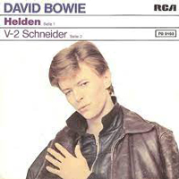

A West German film directed by Uli Edel about a 14 year old's descent into drug abuse, prostitution, and general sleaze led to this 1981 soundtrack, comprised entirely of previously released songs from David Bowie's "Thin White Duke" period. The bleak music of Bowie's collaborations with Brian Eno provides a fitting backdrop to the film, as his icy soul killer pose perfectly reflected the frozen and fragmented lives of Christiane and her gang: an "alternative family" taking respite in discos and underground train stations. Removed from that context, the album is still enjoyable for the sheer quality of the songs. Its primary appeal, of course, is to Bowie completists, who will gush over the relative rarities "Heroes/Helden" (Bowie shifting from English to German in mid-song) and a live version of Station to Station, as well as some magnificently extensive liner notes recapping both the film and the songs. More casual yet devoted fans will be disappointed by the truncated TVC-15 and Stay (the latter excising nearly all of Earl Slick's searing guitar pyrotechnics), but will gain some much-needed exposure to Eno's brand of atmospheric orchestration. Despite the melancholia of Eno's wordless contributions and the film's dark theme, there are moments of levity to be found in TVC-15 and Boys Keep Swinging; that mix of darks and lights makes the soundtrack to Christiane F. - which, tragically, did not see CD release until 2001 - an intriguing listen for anyone who appreciates David Bowie's artistic output from the mid- to late '70s.
V-2 SCHNEIDER
V-2 Schneider
V-2 Schneider
TVC 15
Oh oh oh oh oh, oh oh oh oh oh
Oh oh oh oh oh, oh oh oh oh oh
Oh oh oh oh oh, oh oh oh oh oh
Up every evening 'bout half eight or nine
I give my complete attention to a very good friend of mine
He's quadraphonic, he's a, he's got more channels, a
So hologramic, oh, my TVC 15
I brought my baby home, she, she sat around forlorn
She saw my TVC 15, baby's gone, she
She crawled right in, my, my, she crawled right in my
So hologramic, oh, my TVC 15
Oh, so demonic, oh, my TVC 15
Maybe if I pray every each night I sit there pleading
"Send back my dream test baby, she's my main feature"
My TVC 15, yeah, he just stares back unblinking
So hologramic, oh, my TVC 15
One of these nights I may just jump down that rainbow way
Be with my baby, then we'll spend some time together
So hologramic oh my TVC 15
My baby's in there someplace, love's rating in the sky
So hologramic, oh, my TVC 15
Transition
Transmission
Transition
Transmission
Oh, my TVC 15
Uh oh, TVC 15
Oh, my TVC 15
Uh oh, TVC 15
Oh, my TVC 15
Uh oh, TVC 15
Oh, my TVC 15
Uh oh, TVC 15
Maybe if I pray every, each night I sit there pleading
"Send back my dream test baby, she's my main feature"
My TVC 15, yeah, he just stares back unblinking
So hologramic, oh, my TVC 15
One of these nights I may just, jump down that rainbow way
Be with my baby, then we'll spend some time together
So hologramic, oh, my TVC 15
My baby's in there someplace
Love's rating in the sky
So hologramic, oh, my TVC 15
Oh oh oh oh oh, oh oh oh oh oh
Oh oh oh oh oh, oh oh oh oh oh
Oh oh oh oh oh, oh oh oh oh oh
Transition
Transmission
Transition
Transmission
Oh, my TVC 15
Uh oh, TVC 15
Oh, my TVC 15
Uh oh, TVC 15
"HEROES / HELDEN"
I, I will be king
And you, you will be queen
Though nothing will drive them away
We can beat them just for one day
We can be heroes just for one day
And you, you can be mean
And I, I'll drink all the time
'Cause we're lovers, and that is a fact
Yes, we're lovers, and that is that
Though nothing will keep us together
We could steal time just for one day
We can be heroes forever and ever
What d'you say?
Du, könntest du schwimmen
Wie Delphine, Delphine es tun
Niemand gibt uns eine Chance
Doch können wir siegen für immer und immer
Und wir sind dann Helden für einen Tag
Ich, ich bin dann König
Und du, du Königin
Obwohl sie unschlagbar scheinen
Werden wir Helden für einen Tag
Wir sind dann wir an diesem Tag
Ich, ich glaub' das zu träumen (Zu träumen)
Die Mauer, im Rücken war kalt (War kalt)
Schüsse reissen die Luft (Reissen die Luft)
Doch wir küssen, als ob nichts geschieht (Nichts geschieht)
Und die Scham fiel auf ihre Seite
Oh, wir können sie schlagen für alle Zeiten
Dann sind wir Helden nur diesen Tag
Dann sind wir Helden
Dann sind wir Helden
Dann sind wir Helden nur diesen Tag
Dann sind wir Helden
We're nothing, and nothing will help us
Maybe we're lying, then you better not stay
But we could be safer, just for one day
Oh-oh-oh-oh, oh-oh-oh-oh
BOYS KEEP SWINGING
Heaven loves ya
The clouds part for ya
Nothing stands in your way when you're a boy
Clothes always fit ya
Life is a pop of the cherry when you're a boy
When you're a boy, you can wear a uniform
When you're a boy, other boys check you out
You get a girl, these are your favorite things
When you're a boy
Boys
Boys
Boys keep swinging
Boys always work it out
Uncage the colors, unfurl the flag
Luck just kissed you hello
When you're a boy
They'll never clone you, you are always first on the line
When you're a boy
When you're a boy, you can buy a home of your own
When you're a boy, learn to drive and everything
You'll get your share
When you're a boy
Boys
Boys
Boys keep swinging
Boys always work it out
SENSE OF DOUBT
(Instrumental)
STATION TO STATION
The return of the Thin White Duke
Throwing darts in lovers' eyes
Here are we, one magical moment
Such is the stuff, from where dreams are woven
Bending sound, dredging the ocean
Lost in my circle
Here am I, flashing no colour
Tall in this room overlooking the ocean
Here are we, one magical movement
From Kether to Malkuth
There are, you drive like a demon
From station to station
The return of the Thin White Duke
Throwing darts in lovers' eyes
The return of the Thin White Duke
Throwing darts in lovers' eyes
The return of the Thin White Duke
Making sure white stains
Once there were mountains on mountains
And once there were sun birds to soar with
And once I could never be down
Got to keep searching and searching
And oh, what will I be believing
And who will connect me with love?
Wonder who, wonder who, wonder when
Have you sought fortune, evasive and shy?
Drink to the men who protect you and I
Drink, drink, drain your glass, raise your glass high
It's not the side-effects of the cocaine
I'm thinking that it must be love
It's too late to be grateful
It's too late to be late again
It's too late to be hateful
The European canon is near
I must be only one in a million
I won't let the day pass without her
It's too late to be grateful
It's too late to be late again
It's too late to be hateful
The European canon is here
Should I believe that I've been stricken?
Does my face show some kind of glow?
It's too late to be grateful
It's too late to be late again
It's too late to be hateful
The European canon is here, yes it's here
It's too late, It's too late
It's too late, It's too late
It's too late
The European canon is near
It's not the side-effects of the cocaine
I'm thinking that it must be love
It's too late to be grateful
It's too late to be late again
It's too late to be hateful
The European canon is here
I must be only one in a million
I won't let the day pass without her
It's too late to be grateful
It's too late to be late again
It's too late to be hateful
The European canon is here, yes it's here
Should I believe that I've been stricken?
Does my face show some kind of glow?
It's too late to be grateful
It's too late to be late again
It's too late to be hateful
The European canon is here, yes it's here
It's too late, It's too late
It's too late, It's too late
It's too late
The European canon is here
LOOK BACK IN ANGER
"You know who I am," he said
The speaker was an angel
He coughed and shook his crumpled wings
Closed his eyes and moved his lips
"It's time we should be going"
(Waiting so long, I've been waiting so, waiting so)
Look back in anger, driven by the night
'Til you come
(Waiting so long, I've been waiting so, waiting so)
Look back in anger, see it in my eyes
'Til you come
No one seemed to hear him
So he leafed through a magazine
And, yawning, rubbed the sleep away
Very sane he seemed to me
(Waiting so long, I've been waiting so, waiting so)
Look back in anger, driven by the night
'Til you come
(Waiting so long, I've been waiting so, waiting so)
Look back in anger, feel it in my voice
'Til you come
(Waiting so long, ah...)
(Waiting so long, I've been waiting so, waiting so)
(Waiting so long, I've been waiting so, waiting so)
(Waiting so long)
STAY
This week dragged past me so slowly
The days fell on their knees
Maybe I'll take something to help me
Hope someone takes after me
I guess there's always some change in the weather
This time I know we could get it together
If I did casually mention tonight
That would be crazy tonight
Stay - that's what I meant to say
Or do something, but what I never say is
Stay this time, I really meant to so bad this time
'Cause you can never really tell
When somebody wants something you want too
Heart wrecker, heart wrecker, make me delight
Life is so vague when it brings someone new
This time tomorrow I'll know what to do
I know it's happened to you
Stay - that's what I meant to say
Or do something, but what I never say is
Stay this time, I really meant to so bad this time
'Cause you can never really tell
When somebody wants something you want too
Stay - that's what I meant to say
Or do something, but what I never say is
Stay this time, I really meant to so bad this time
'Cause you can never really tell
When somebody wants something you want too
WARSZAWA
Mmmm-mm-mm-ommm
Sula vie dilejo
Mmmm-mm-mm-ommm
Sula vie milejo
Mmm-omm
Cheli venco deho
Cheli venco deho
Malio
Mmmm-mm-mm-ommm
Helibo seyoman
Cheli venco raero
Malio
Malio
SINGLES
